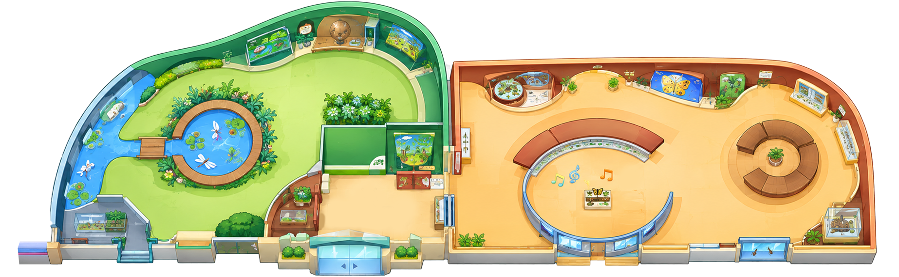
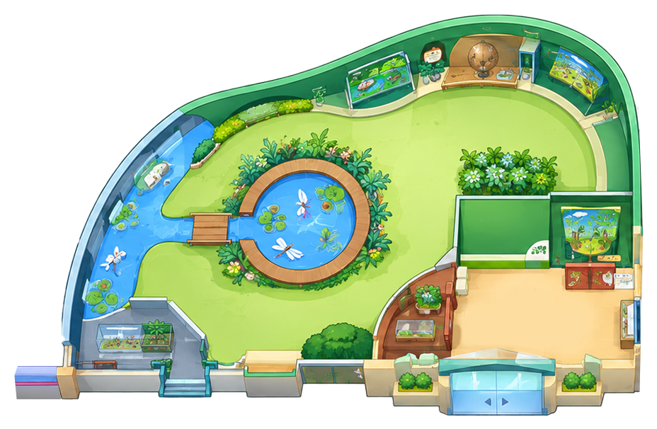
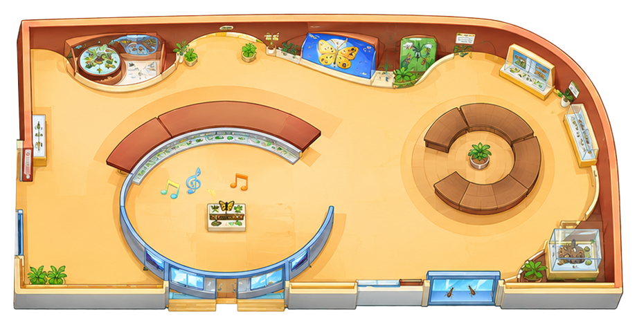
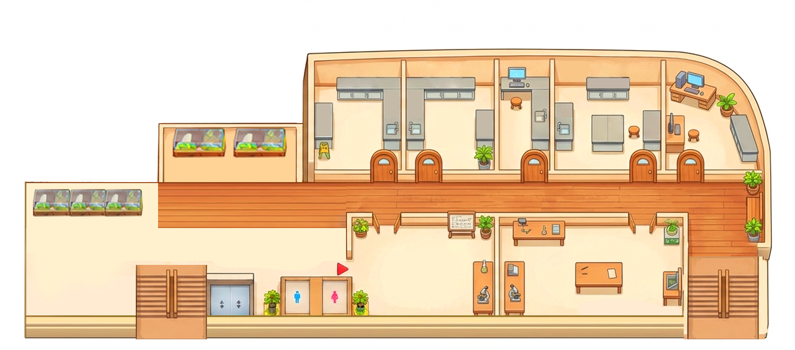

생태관 이용안내
관람안내도를 보며 생태유리온실부터 곤충홍보관까지 차례로 둘러보세요.
- 관람시간10:00 ~ 17:00
- 휴관일매주 월요일
- 문의042-270-5274
관람 순서
- STEP 1안내데스크로비 입구
- STEP 2생태유리온실로비 입구 좌측 · 1~8
- STEP 3곤충홍보관9~21
- STEP 42층 관람계단을 따라 올라오세요
관람안내도

01생태유리온실

Q Q02곤충홍보관

Q Q Q Q Q Q1층 로비 복도전시실 앞 복도에 왼쪽부터 순서대로 있어요
- 출입구
- 안내데스크
- 엘리베이터
- 화장실
- 포토존
- 교육실
- 2층 계단
- 생태유리온실
- 곤충홍보관
- 퀴즈정답
2F전시시설 · 연구시설
- 전시시설
- 연구시설

전시시설 연구시설연구 공간이라 사진을 공개하지 않아요.
곤충을 키우고 연구하는 곳이에요.
전시 구역1F
퀴즈 찾기! 생태관 곳곳에 숨어 있는 표시에서 뒷장 문제의 정답을 찾아보세요.
2층에도 곤충들이 살고 있어요. 계단을 따라 올라오세요!
생태유리온실
- 1곤충 체험장
- 2닥터피쉬
- 3생태연못
- 4배추흰나비 애벌레
- 5포토존
- 6식충식물
- 7장수풍뎅이 전시
- 8나비 번데기
곤충홍보관
- 9곤충표본전시
- 10곤충의 특징
- 11곤충의 성장과정
- 12거미도 곤충일까?
- 13곤충은 어떻게 숨을 쉴까?
- 14곤충의 눈, 코, 입
- 15눈으로 보는 곤충들
- 16숲속, 땅속, 물속 곤충
- 17해충을 잡는 이로운 곤충
- 18곤충, 정말 먹는다구요?
- 19뒤영벌
- 20인터렉티브 영상체험관
- 21먹이가 곤충인 동물 전시
전시시설
- 1수서곤충 전시
- 2대형개체 전시
연구시설
- 3사육실
- 4연구실
- 5세척건조실
- 6저온창고
담당부서 농생명정책과 문의전화 042-270-5273